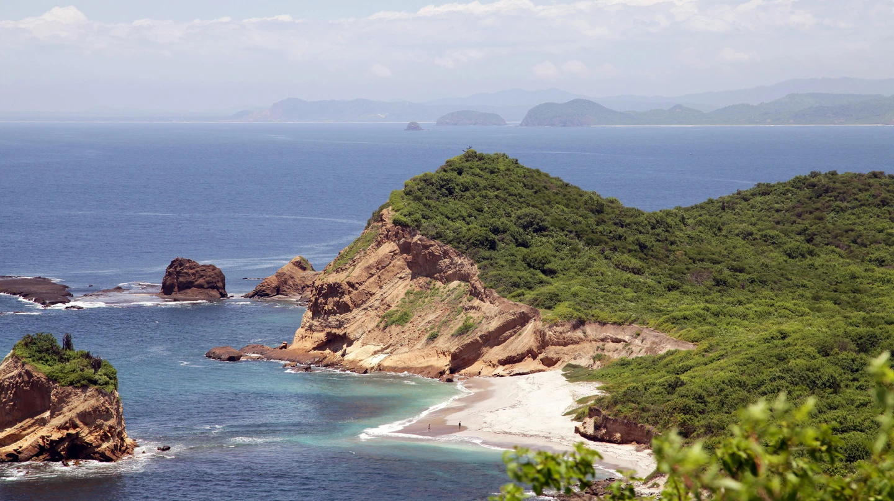
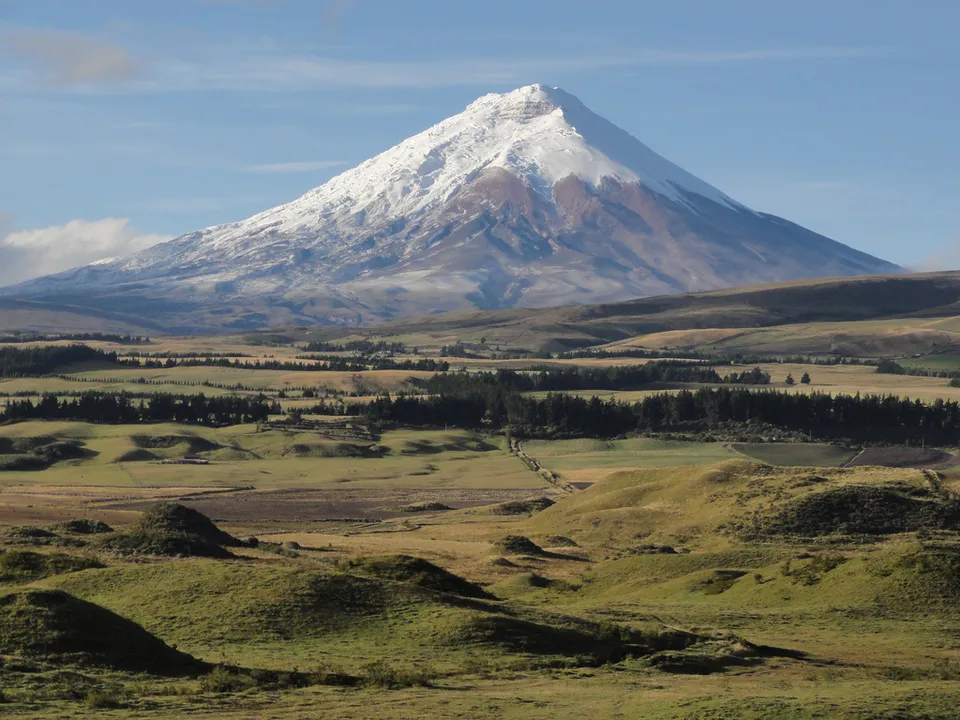
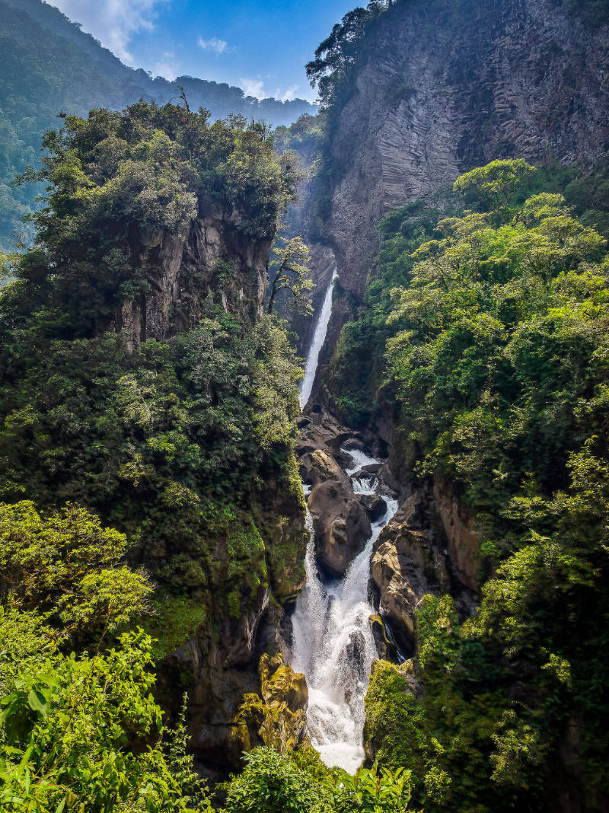
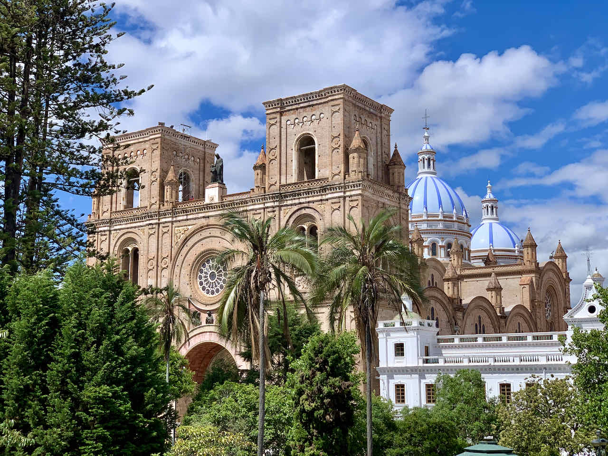
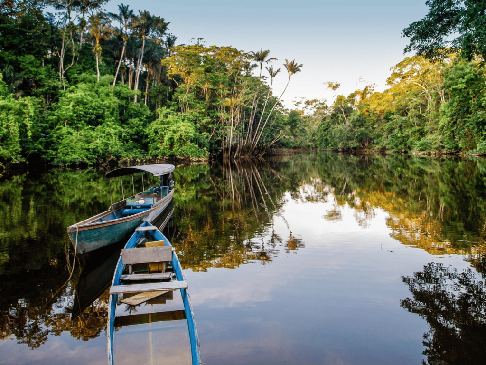

Ecuador is a land full of treasures and we urge you to take some time to see its beauty.
In the following, we want to give you a brief overview of our favorite spots at the idyllic coast, stunning volcanic highlands, the misty Amazon jungle and alien-like Galapagos Islands.

Coast / Beaches to unwind
Ayampe is a calm village with an endless natural beach to walk, cliffs to climb and silence to breathe.
The prettiest beaches you may find around Los Frailes north of Puerto Lopez, with a nice walking trail leading you around 3 remote stunning beaches.
Coast / Best spots to do stuff
Puerto Lopez itself is a town where you'll find everything from bigger supermarkets, car rentals, restaurants, and accommodations, to a local fish market and boat trips.
May serve well as a base to see surrounding places reachable by car, but also by public busses, even though certainly less comfortably.
Montañita has great cocktail street bars, sea food, a surfer club and lots of disco — at the expense of the idyll.

How to get around.
We recommend you to rent a car or van if you plan to do a longer trip around Ecuador.
However, if you prefer traveling by bus, you can check the destinations at bus agencies such as reinadelcamino.ec or
busbud.com

Highlands / Best spots to hike
The highlands of Ecuador offer some of the best hiking opportunities in South America, with breathtaking landscapes of snow-capped volcanoes, crystal-clear lagoons, and picturesque Andean villages.
Trek the Quilotoa Loop, climb to the summit of Cotopaxi, or explore the lush cloud forests of Mindo, and discover the natural wonders of this stunning region.
Highlands / Get wet
Go to Baños for adventures at the interface of the Andes mountain range and the Amazon jungle.
The town itself may be quite touristic, but you can do small trips to 7 jaw-dropping waterfalls, mountain bike tours, wild water rafts, and hikes, and or chill in the thermal baths and go out at night.


Highlands / Colonial cities
Colonial cities in the highlands of Ecuador are a fascinating blend of Spanish and indigenous cultures, with beautifully preserved architecture, vibrant markets, and colorful festivals.
Explore the charming cobbled streets of Cuenca or Quito, taste delicious local cuisine, and learn about the rich history of this enchanting region.
Safety.
Please be aware that levels of criminality in Ecuador are much higher than in Germany, Austria, Spain etc.
Most people are nice and kind (like everywhere except in Germany).
However, especially if you do not understand Spanish, it can be difficult to tell apart friend from foe.
It is always a good idea to ask at the reception of your stay for directions, ask them for advice and stick to your plans.
Do not walk outside in the dark.
Avoid walking alone in the streets of bigger cities.
Do not carry valuables with you, and if you store them somewhere make sure they are locked away.
Amazon Jungle
Only five hours east of Quito, yet 2000m below the capital, Tena allows you to get a first glimpse into the forest that stretches 1900km up to the Atlantic ocean.
Jungle tours, animal shelters, canyons and exciting insects.
For those of you with more time (and money), we recommend traveling to Yasuní National Park deep in the Ecuadorian Amazon and witness this spectacular and remote gem.


Galapagos Islands
The Galapagos Islands are the true paradise for nature lovers, with an unparalleled diversity of wildlife, pristine beaches, and fascinating volcanic landscapes.
Swim with sea lions, snorkel with penguins, and observe giant tortoises, blue-footed boobies, and marine iguanas in their natural habitats.
It's a once-in-a-lifetime experience that should not be missed.